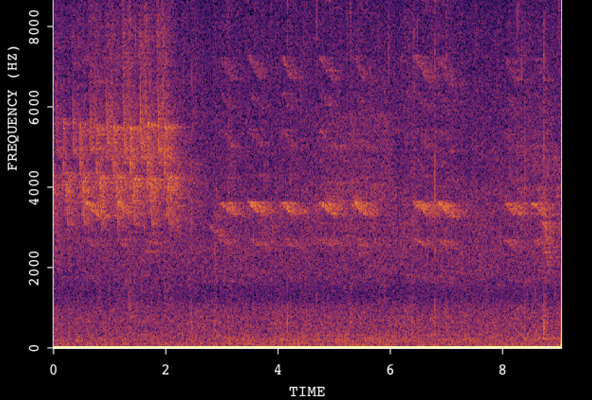
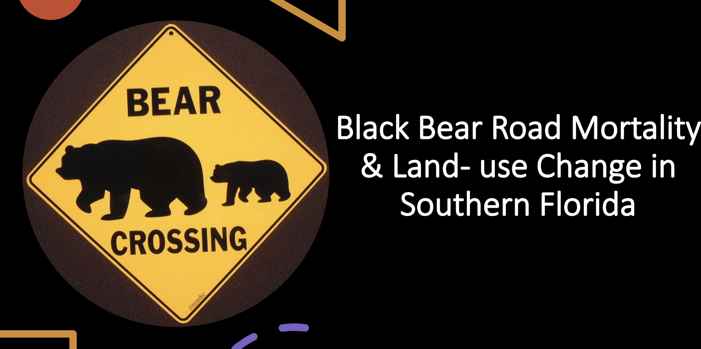
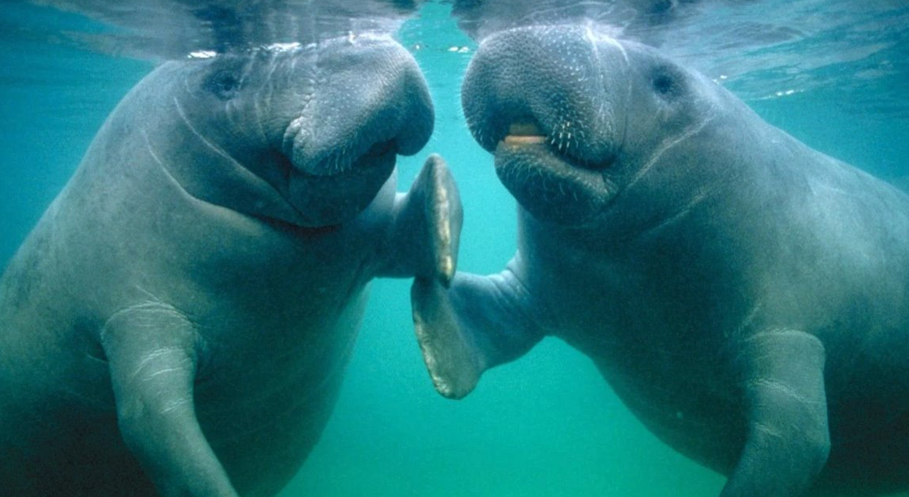

Utilizing satellite data to distinguish forest type- Eboyo area in the Okapi Wildlife Reserve, Democratic Republic of Congo
Assessed forest type categorization in Eboyo using remote sensing data, highlighting the need for improved accuracy, particularly in distinguishing monodominant and mixed forests.

Application of Conservation Technology for Assessong Broad Meadow Brook Wetlands
Conducted a biodiversity assessment of the Broad Meadow Brook Wetland in Worcester, employing acoustic records for bird call analysis and soundscape assessment.

Exploring the Interrelationship Between Air Quality and Vegetation Health in Massachusetts
Exploring the intricate relationship between air quality and vegetation health in Massachusetts, this study aims to uncover their mutual impact and inform climate change research. By analyzing trends in vegetation indices and aerosol levels, we seek to provide valuable insights into environmental dynamics.

Accessing the Risk of Wildlife-Vehicle Collisions for Black Bears (Ursus americanus) in Southern Florida: A Land-Use Perspective
Using PostgreSQL to investigate the impact of roads on black bears in Florida, addressing wildlife-vehicle conflict and roadkill risks. Findings inform measures to protect vulnerable bear populations and mitigate conflicts on roadways.

Analysis of Florida Manatee Collision Records and Protection Zones
Analyzes the distribution of increasing manatee mortality records in Florida from 1974 to 2013 using ArcGIS.

Spatiotemporal Hotspot Analysis for Crime Record in Atlanta before and after Covid Shutdown
Examines the relationship between the Social Vulnerability Index (SVI) and changes in crime rates in Atlanta before and after the COVID-19 shutdown to identify potential patterns for targeted violence prevention.

Long-Term Land Cover Changes around Pasoh Forest Reserve, Peninsular Malaysia 1998 - 2010
This study assesses land use changes around Malaysia's Pasoh Forest Reserve, analyzing pre and post-clearcutting shifts between 2001 and 2002 using Landsat 5 TM images from 1986 to 2012 to understand their impact on the reserve's ecosystem..